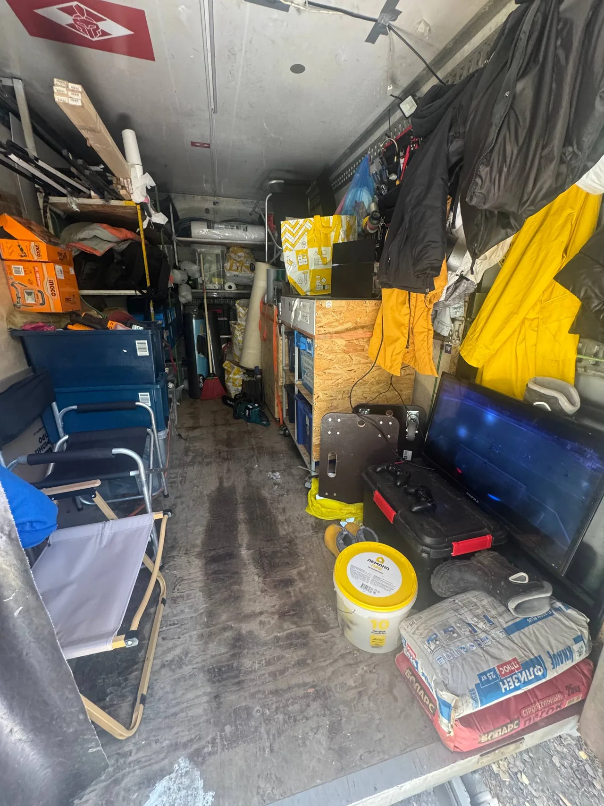
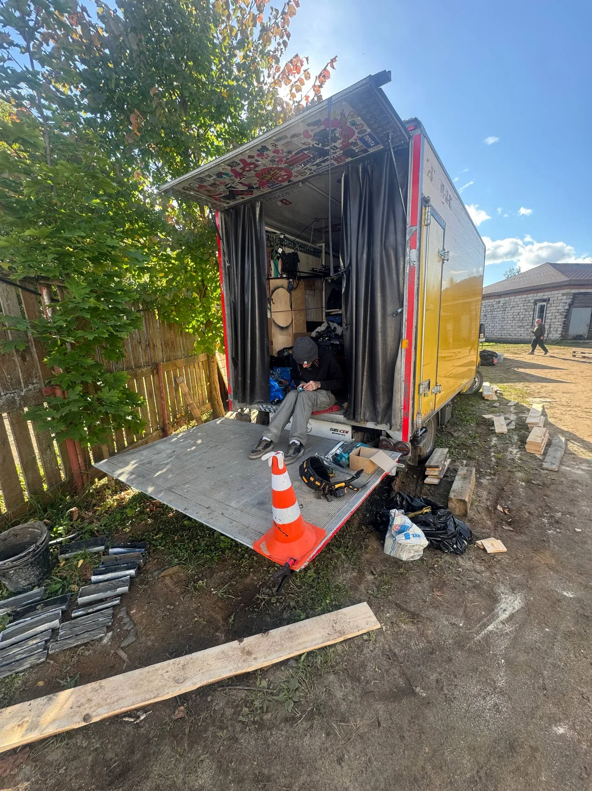

Один человек в контексте
Марат сам за рулём. Маршрут, доступ к машине и задачи на площадке обсуждаете с тем, кто приедет на смену.
Худваген с водителем · Москва
Оборудованный Sprinter для художественного цеха, реквизита и декораций. За рулём - Марат. От первых закупок до последнего съёмочного дня.
Одна машина. Личное участие.
Работа по договору и актам.

01 / ДЛЯ ПРОДАКШЕНА
Марат сам за рулём. Маршрут, доступ к машине и задачи на площадке обсуждаете с тем, кто приедет на смену.
Стеллажи, инструмент и организация пространства. Состав комплекта заранее сверяем под ваш проект.
Закупки, сбор реквизита по Москве, доставка и работа на локации. Возврат и следующий день планируем вместе.
02 / МАШИНА И КОМПЛЕКТАЦИЯ
Mercedes-Benz Sprinter.
Одна конкретная машина, которую вы видите на фотографиях.



ПРОСТРАНСТВО ПОД ЗАДАЧУ
Ориентировочные размеры будки, со слов владельца. Полезные размеры и проём проверяем под ваш груз.
*Предварительные данные владельца. Допустимый груз после оснащения и нагрузку гидроборта подтверждаем до заказа.
Обсудить ваш комплектНа фото - рабочая обстановка. Реквизит и материалы продакшена не входят автоматически в аренду.
03 / ОТ ЗАКУПКИ ДО СЪЁМКИ
Марат понимает подготовку художественного цеха. Составляем маршрут по задачам и времени вашей команды.
Строительные магазины и рынки. Материалы, Оракал и печать - по списку и согласованным расходам.
Забираем подготовленные материалы и реквизит по адресам. Сверяем объём, упаковку и порядок погрузки.
Доставляем груз. Организуем доступ к кузову и оборудованию в согласованной зоне.
Машина и водитель на задаче. Помощь с погрузкой и конструкциями обсуждаем отдельно.
Обратный маршрут и возврат реквизита. Стыковые предметы для следующего сезона учитываем в задаче; хранение согласуем отдельно.
04 / ДОПОЛНИТЕЛЬНЫЕ ЗАДАЧИ
Можно обсудить помощь с погрузкой, сборкой и конструкциями на площадке или в цехе.
Сначала уточняем объём, время, инструмент и необходимость помощника. Состав и оплату ручной работы согласуем до смены.
Рассказать о задаче05 / ТАРИФЫ И УСЛОВИЯ
13 000 ₽
за 12 рабочих часов
Оборудованный Sprinter с владельцем-водителем. Работа по договору и актам.
Проверить даты06 / БЕЗ ПОСТАНОВКИ
Реальная машина.
Реальная рабочая обстановка.
07 / ПЕРЕД СМЕНОЙ
Марат, владелец машины. Он работает лично и не передаёт Sprinter другому водителю.
В машине есть стеллажи, инструмент и рабочая организация пространства. Конкретную опись согласуем под задачу. Реквизит и материалы на фотографиях могут принадлежать продакшену.
Да, Марату интересны проекты на 2-3 месяца. По сведениям на 27 сентября 2026 года, он планирует следующий проект после завершения занятости 5-6 октября. Это ориентир, а не подтверждённая свободная дата. График и условия нужно сверить лично.
Зависит от согласованной задачи. Погрузку, сборку и монтаж обсуждаем заранее: что нужно сделать, сколько времени это займёт, нужен ли помощник и как оплачивается работа.
По договору через ИП Марата, закрывающие документы - акты. Порядок оплаты и реквизиты согласуются до заказа.
Даты, длительность проекта, адреса, перечень и размеры груза. Добавьте потребность в генераторе, ручной работе и обратном вывозе. Если есть список реквизита или фото задачи, их можно приложить при личном общении.
08 / ВАШ СЛЕДУЮЩИЙ ПРОЕКТ
Проверить даты. Уточнить комплект.
Обсудить несколько месяцев вместе.
КОРОТКО О ВАШЕМ ПРОЕКТЕ
Сообщение не отправлено. Скопируйте текст и отправьте Марату в удобном мессенджере.